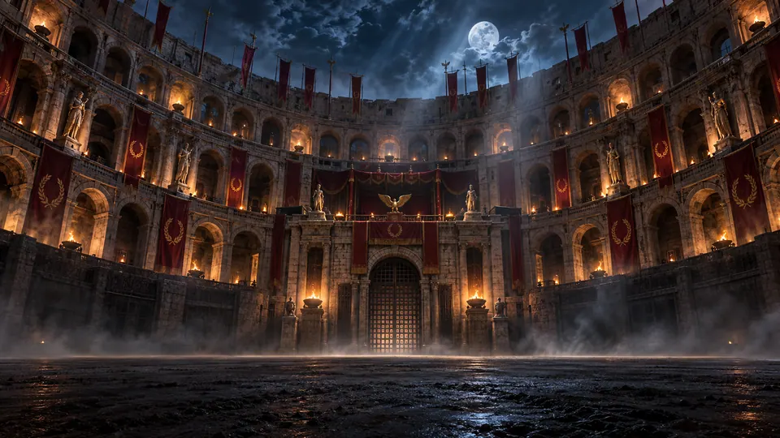
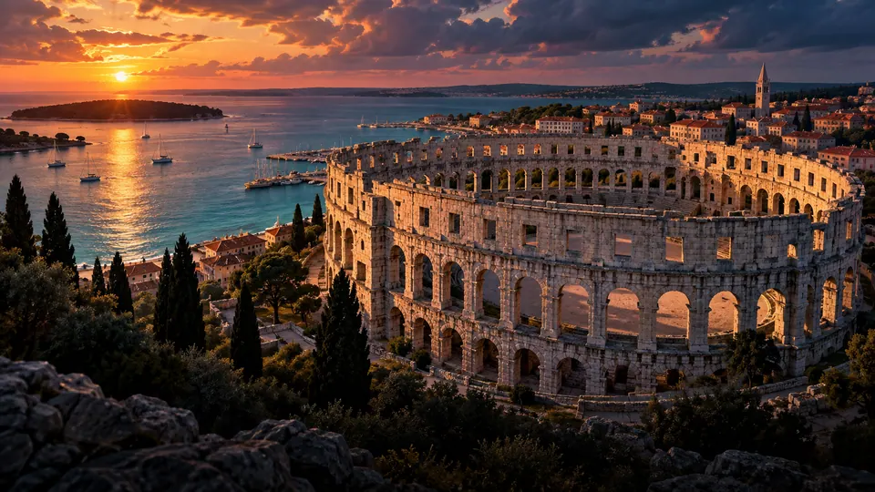
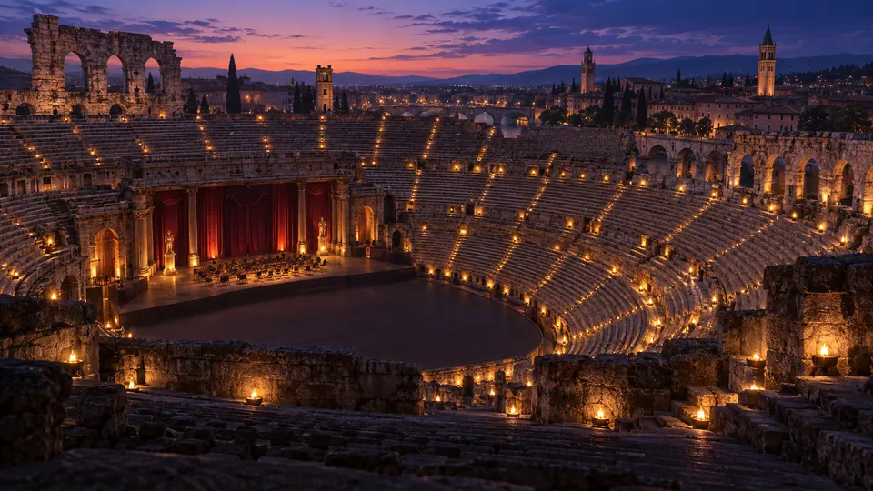
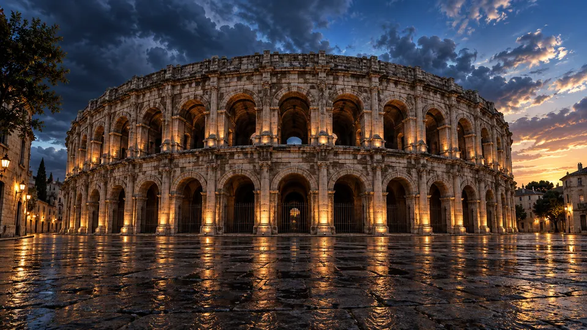
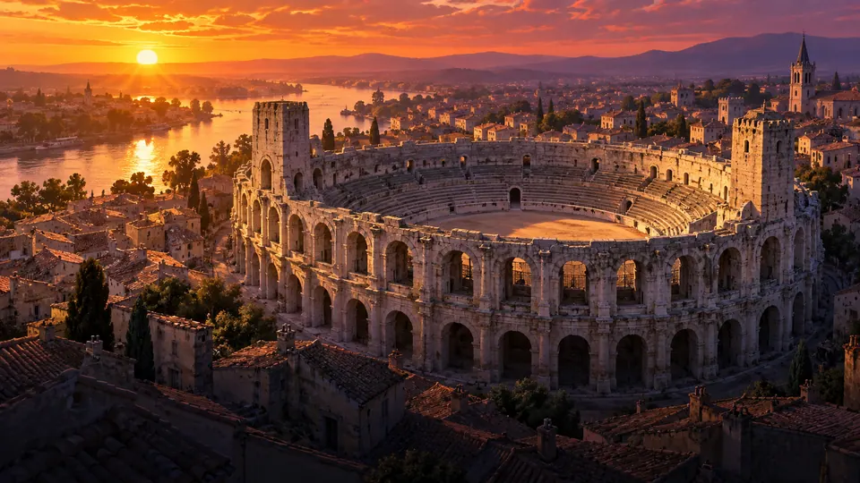
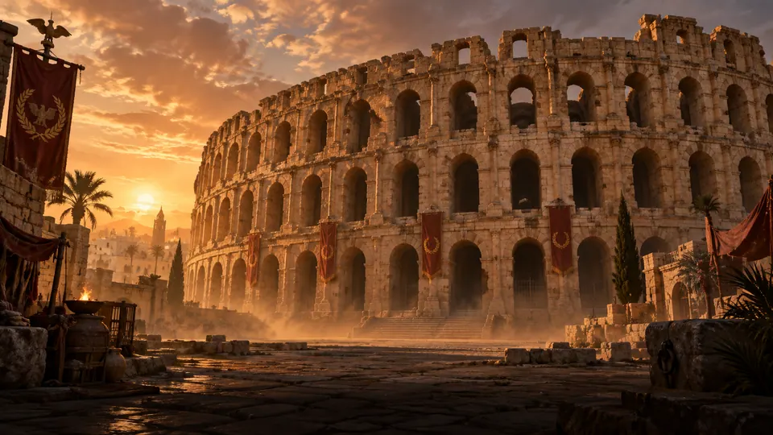
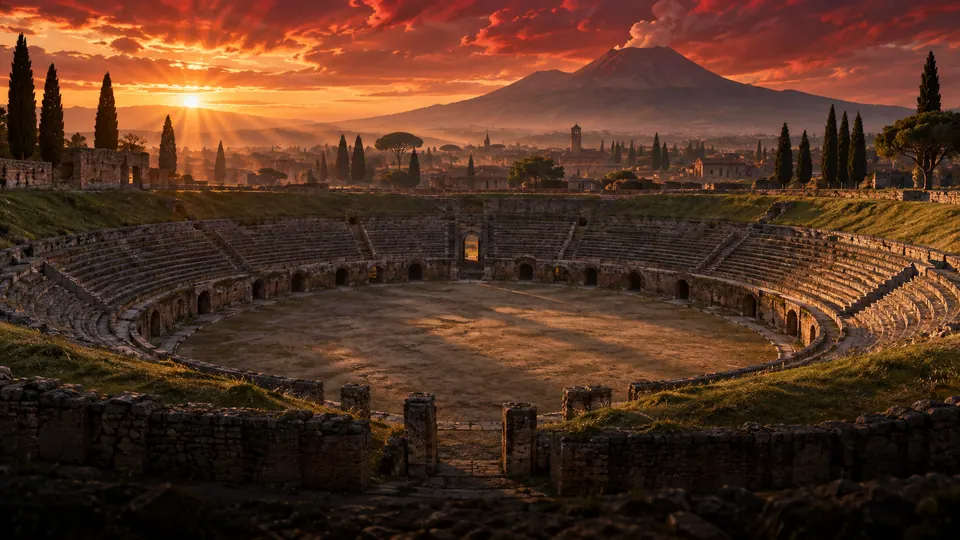
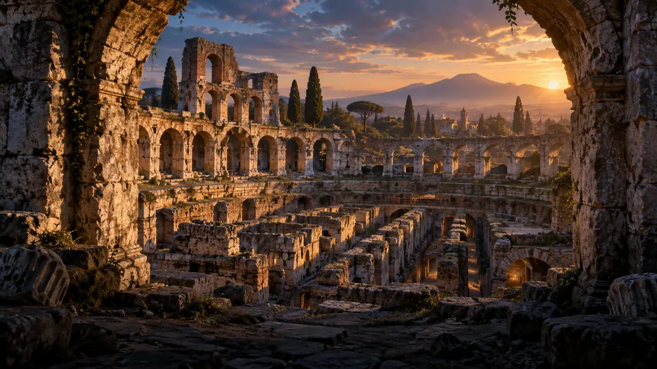
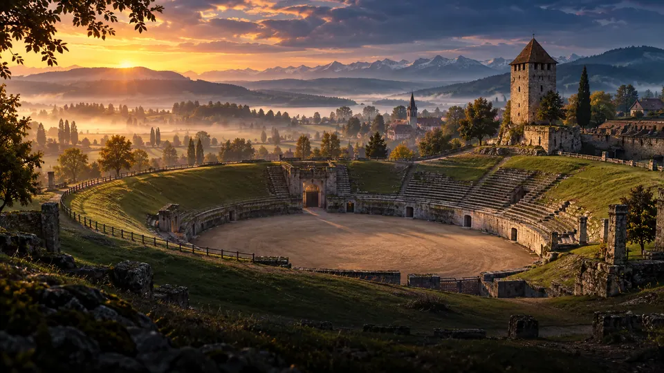
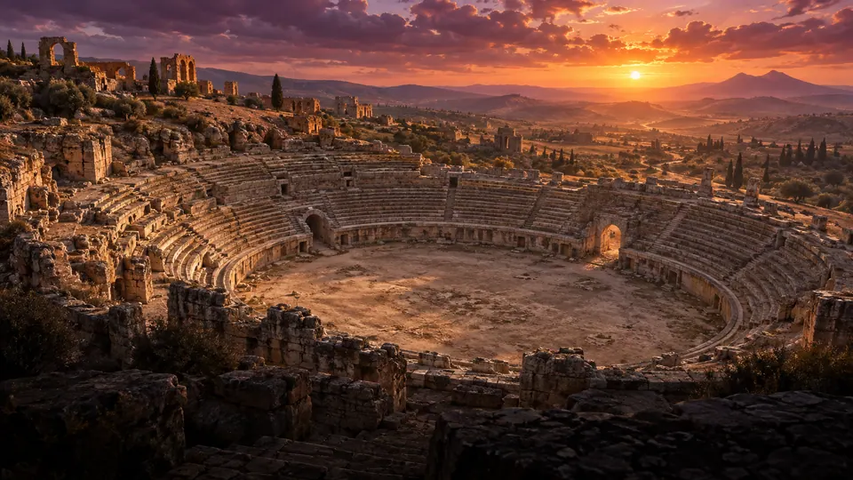

The Eternal Arenas — Kolosseum
rome
Download 4K · 3840 × 2160
pula
Download 4K · 3840 × 2160
verona
Download 4K · 3840 × 2160
nimes
Download 4K · 3840 × 2160
arles
Download 4K · 3840 × 2160
el djem
Download 4K · 3840 × 2160
pompeii
Download 4K · 3840 × 2160
capua
Download 4K · 3840 × 2160
avenches
Download 4K · 3840 × 2160
uthina
Download 4K · 3840 × 2160